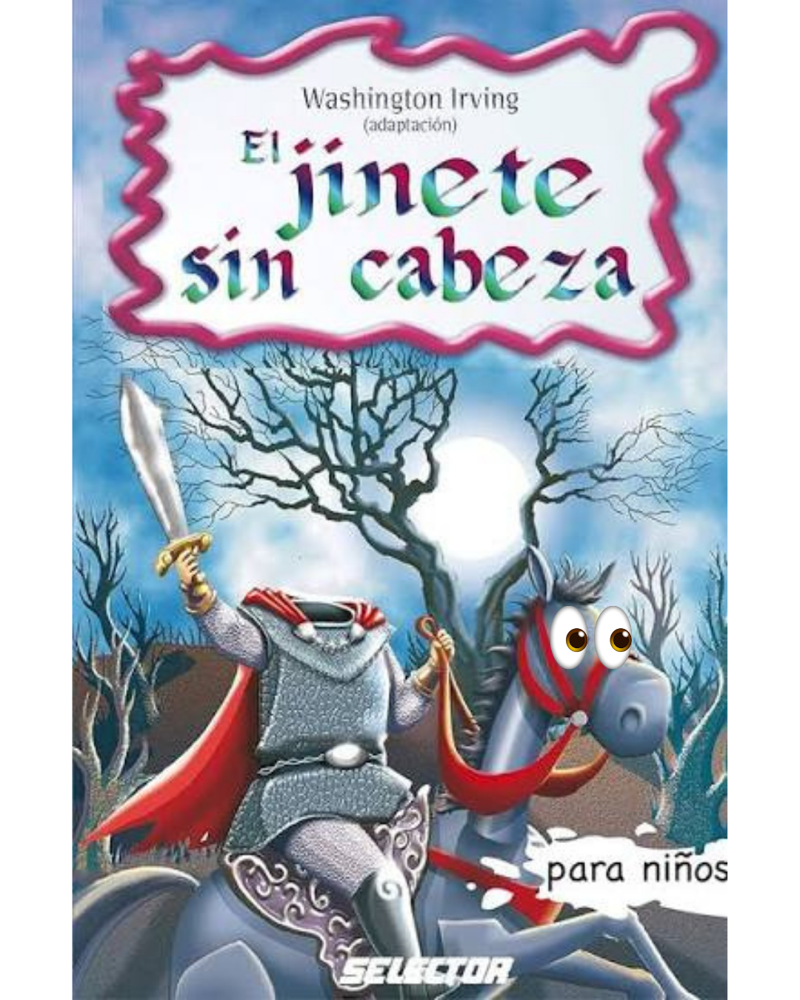

Curiosidades
el void sin cabeza tiene varias adaptaciones y variantes,
entre peliculas y libros para todas las edades



el General Hector Elizondo es un actor real y participo en la pelicula de sonic arthurs aventure